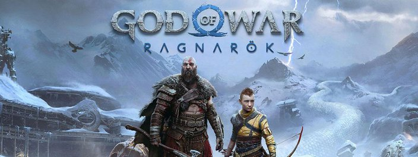
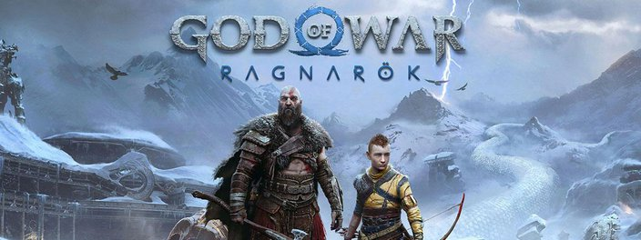

Nossos êxitos
Nossas franquias se destacam pelo sucesso em levar os jogadores a realidades alternativas e fazê-los mergulhar em novos mundos. Seja uma guerrilheira antiabsolutismo em FarCry 6 ou dispute corridas surreais pelas belas paisagens mexicanas em Forza Horizon 5. Tente adaptar-se a campos de batalha dinâmicos e cenários surreais no novo Battlefield 2042 e consiga superá-los com a ajuda do seu pelotão e de um arsenal de ponta.
Nossa jornada
Através dos anos, com o avanço da tecnologia e com incrementos de IA fizemos os jogos com os melhores gráficos já vistos. Cyberpunk 2077 é uma verdadeira obra-prima da computação, combinando o aprendizado da inteligência artificial com as tecnologias de RayTracing para mapeamento da luz sua noites nunca mais serão as mesmas ao vagar pela cidade de Night City.